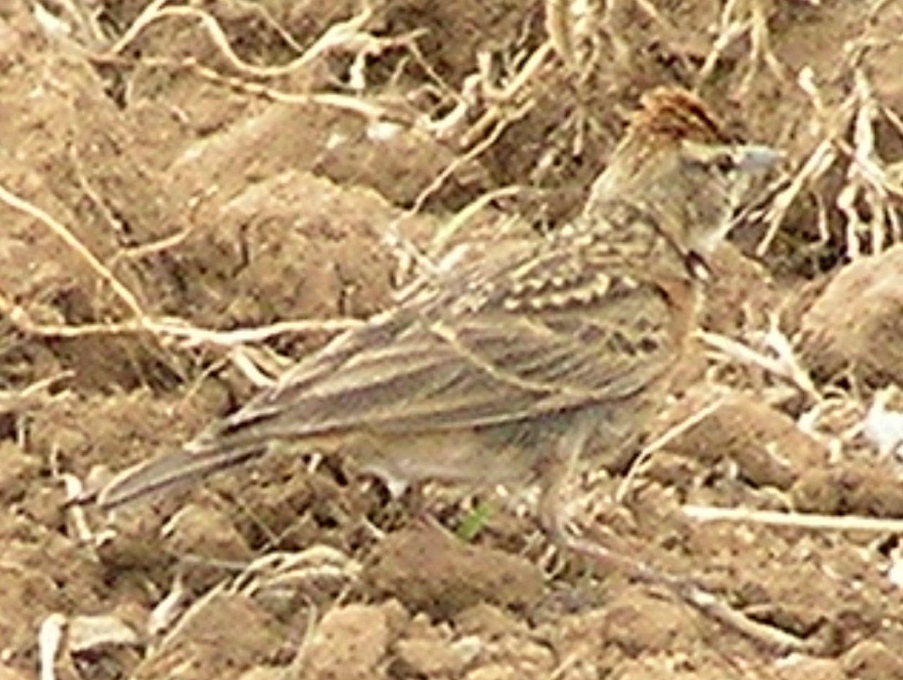
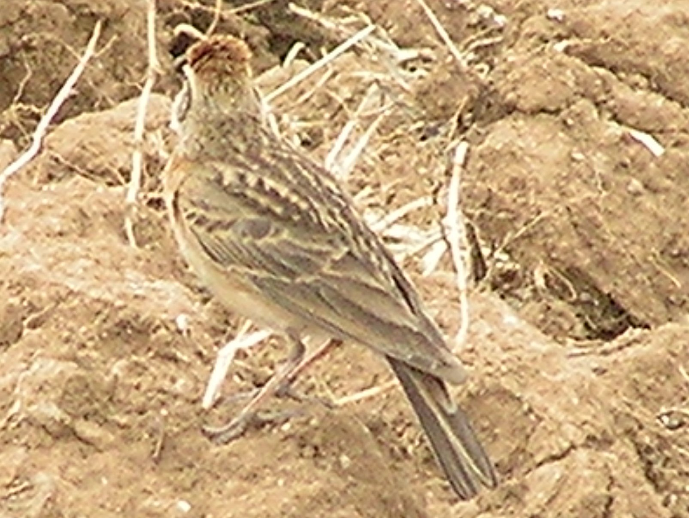
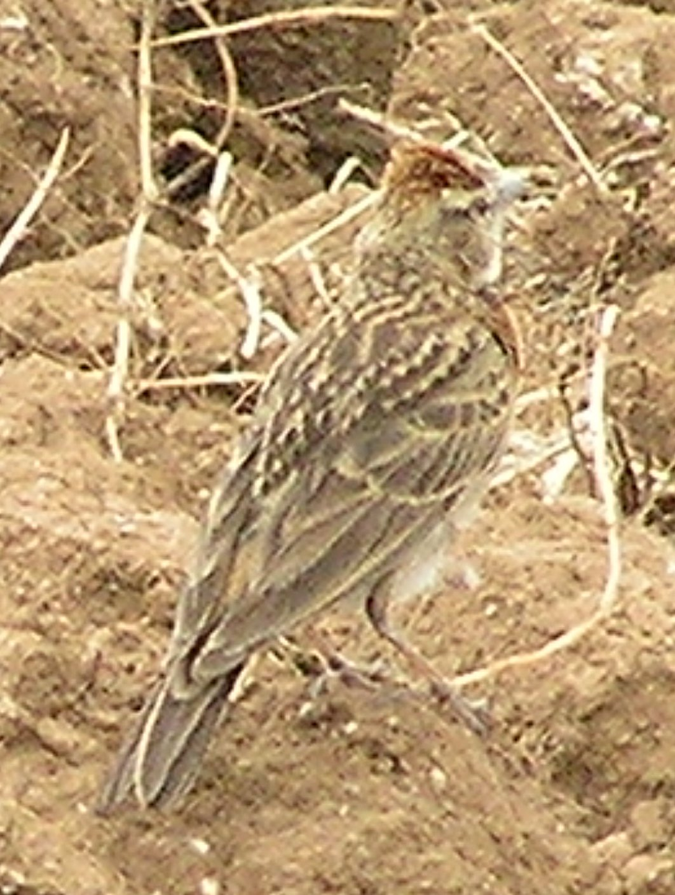
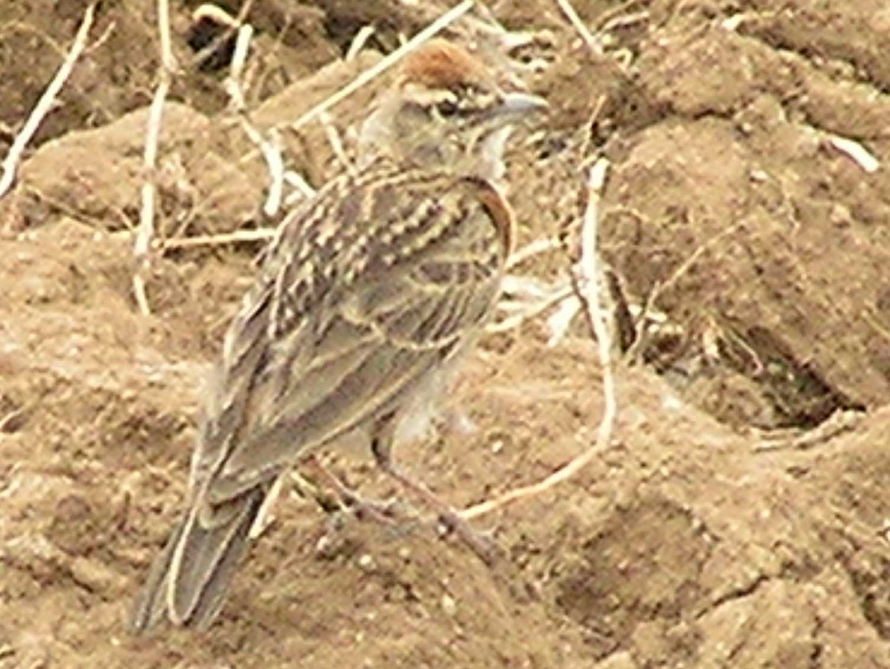

14-15cm.
|  |  |
|  |  |
A crested lark with rufous crest and shoulders and slightly rufous rump. On a ploughed field with larks singing overhead.(29th March)
I first thought this was a Thekla lark, but the clear red colouration indicates otherwise. Erlanger's lark is often treated as a race of the Red-Capped Lark, but has black (not red) patches on the side of its neck. This bird has red patches.